VisEvi.Project title
Disaster signals, verified from orbit.
A sensor or weather signal raises the alarm. VisEvi captures a fresh satellite view of the site, compares it with the same season a year earlier through Cloudinary, confirms or questions the alert, and tells the responsible person.
monitored sites
satellite and field captures
passing verification
Problem statement and target audience
recorded disasters, 2000 to 2019
lives lost
people affected
economic losses
Climate-related disasters rose from 3,656 (1980 to 1999) to 6,681 (2000 to 2019). Sources: UNDRR and CRED, 2020; UNDRR and WMO, 2022 (see References).
B2G: primary
State and district disaster management authorities, municipal corporations, control-room officers. Typically professionals in their late 20s to 50s.
B2B
Parametric and crop insurers verifying events, utilities and infrastructure operators, agri-cooperatives.
NGOs and sustainability teams
Humanitarian programme teams, CSR and ESG auditors who must prove what happened, where and when.
Indirect beneficiaries
Communities in heat-, flood- and cyclone-prone regions who get a faster, better-founded warning. No B2C product at this stage.
Our unique solution
Signal watchLive temperature and coastal waves at every monitored site, judged against ten years of local history plus fixed limits. Field sensors post to a webhook.
Automatic satellite captureAn alert pulls a fresh NASA Worldview snapshot of the site, screens out cloud and no-data days, and sends it through Cloudinary (enhance, AI Vision).
Before / after verdictCompared with the same season a year earlier; vegetation, water-like area and cloud are measured. Result: confirmed, not confirmed or inconclusive.
Notify the right personResponsible contacts get email or free ntfy push, with the evidence and a full audit log of every message.
Risk index with confidence0 to 100 from six sourced factors (NASA hazard maps, live, forecast, incidents, nearby events, imagery), plus a separate confidence score.
Trust layerSatellite images are re-requested from NASA to prove provenance; duplicates, wrong content and false dates are flagged; every asset traces to its Cloudinary ID and transformations.
| Existing alternative | What it does | What is missing |
|---|---|---|
| Weather and warning apps | Publish a forecast or alert | No proof from the ground, no per-site follow-up |
| Satellite viewers | Show imagery on demand | Manual, no trigger, no verdict, no notification |
| Global event feeds | List fires, storms, floods | Not checked at your site; no owner told |
| Media managers | Store and transform photos | No live signal, no verification |
Tech stack and architecture
| Frontend | React 19, Vite, TypeScript, Tailwind CSS 4, React Router, Leaflet, hand-built SVG charts |
| Backend | Node.js, Express 5, TypeScript, sharp (image analysis), Nodemailer, Multer |
| Database | MongoDB Atlas: sites, readings, alerts, assets, contacts, notifications |
| Media + AI | Cloudinary: upload, auto-orient / enhance / sharpen, AI Vision, overlay transformations |
| Data APIs | Open-Meteo (forecast, ERA5 history, marine); NASA GIBS, Worldview Snapshots, EONET, SEDAC hazard maps; OpenStreetMap and Nominatim |
| Alerts out | SMTP email, ntfy.sh push |
| Deploy | Vercel (client), Render (API), Atlas |
Flow: 1 reading breaches a limit or the local normal, 2 alert triggers a NASA capture, 3 Cloudinary analyses it, and it is compared and given a verdict, 4 risk is recomputed, 5 the responsible officer is told.
Feasibility, showstoppers, USP and business model
| Risk | Mitigation |
|---|---|
| Satellite resolution is about 250 m per pixel | "Inconclusive" is a first-class verdict; roadmap: Sentinel-2 at 10 m |
| Cloud cover and no-data days | Automatic screening, retry over 10 days, reuse a recent capture |
| Free-API terms and limits | Caching, provider swap (Google Weather optional), paid plans when commercial |
| Cloudinary quota | Capture only when an alert fires; reuse within 8 days |
| False alarms, unvalidated weights | Anomaly must also be stressful; confidence score; back-test against EM-DAT next |
One product closes the loop from a live signal to a satellite-verified, notified alert, with a transparent risk score and a confidence value that says how far to trust it.
| Customers | State and district disaster authorities (B2G); insurers and utilities (B2B); NGOs and CSR or ESG auditors |
| Subscription | Per monitored site per month, tiered by site count and check frequency |
| Verified-event API | Per event or claim check for insurers, via webhook |
| Services | Onboarding: thresholds, contacts and local-language setup |
| Free tier | NGO and community use, built on open data |
| Sustainability | Costs are event-driven (one AI analysis per capture, only on alerts), so margin grows with sites, not with time |
References